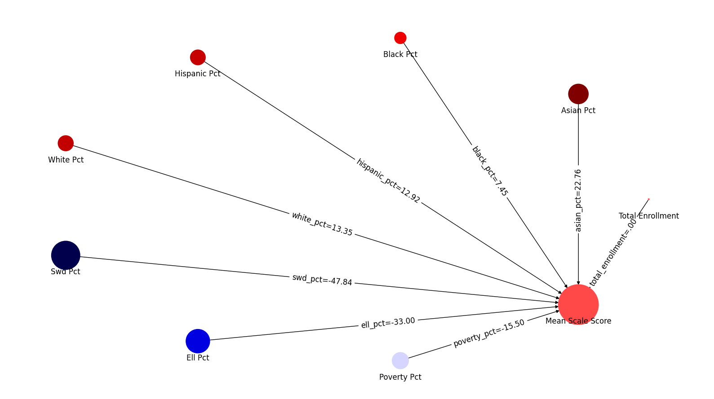
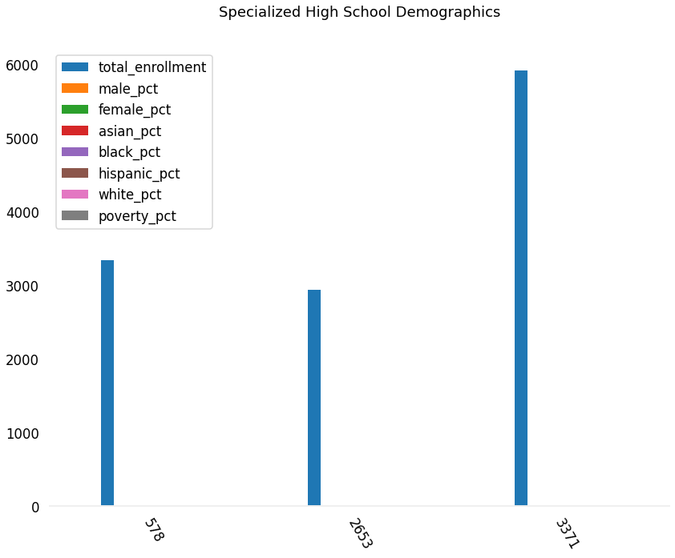
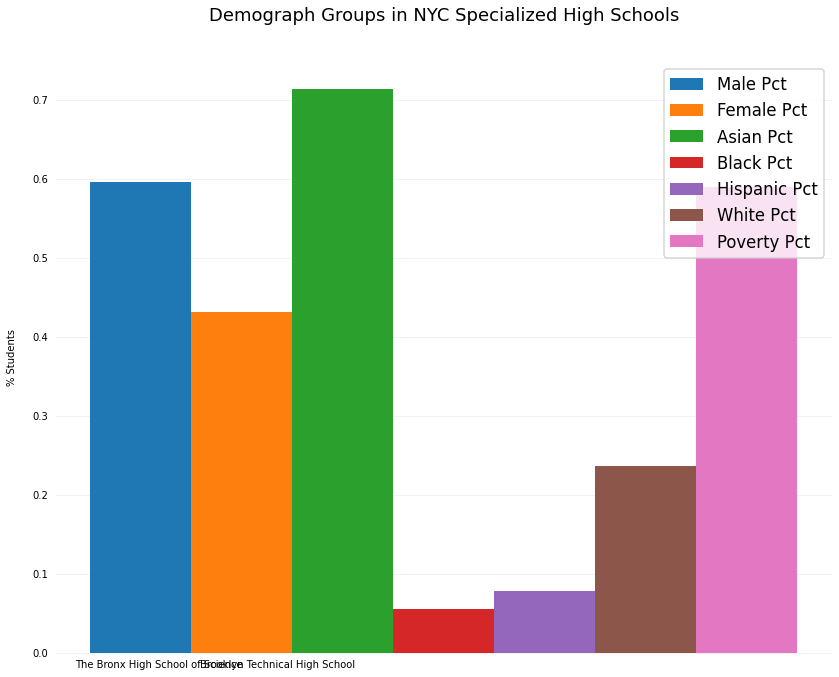

23. Graphs from ui package
Demonstrations of re-usable functions to make “standard” graphs.
[1]:
# automatically reload changes we make to schools.py and ui.py
%load_ext autoreload
%autoreload 2
import pandas as pd
import numpy as np
import statsmodels.api as sm
from statsmodels.formula.api import ols
# graphs and viz
import matplotlib.pyplot as plt
import matplotlib as mpl
import seaborn as sns
import networkx as nx
import math
from IPython.display import Markdown as md
from nycschools import schools, ui, exams
[2]:
# load the demographic data and merge it with the ELA data
df = schools.load_school_demographics()
# load the data from the csv file
ela = exams.load_ela()
#drop the rows with NaN (where the pop is too small to report)
ela = ela[ela["mean_scale_score"].notnull()]
ela = df.merge(ela, how="inner", on=["dbn", "ay"])
ela = ela.query("ay == 2018 and category == 'All Students'")
23.1. OLS Model Network Graph
ui.plot_model takes the model object from statsmodel OLS linear regression and creates a network graph that plots the relation between the factors and the dependent variable.
The example below uses the demographic factors of a school population to predict the average ELA test score (mean_scale_score).
[3]:
# calculate coefficients for these factors
factors = ['total_enrollment', 'asian_pct', 'black_pct',
'hispanic_pct', 'white_pct','swd_pct', 'ell_pct', 'poverty_pct']
# y is the DV
y = ela['mean_scale_score']
X = ela[factors]
X = sm.add_constant(X)
model = sm.OLS(y, X).fit()
ui.plot_model(model)

23.2. Grouped Bar Chart
ui.plot_group_bars
Here we’re going to plot the demographic data for Stuvesant, Bronx Science, and Brooklyn Tech high schools. These three schools’ admissions are set by NYS law to be based on scores on the SHSAT exam. Other schools also use this exam for admissions, but NYC DOE can change the criteria for the other “specialized” schools without seeking permission from NYS.
[6]:
dbn =["02M475", "13K430", "10X445"]
special = df[df["dbn"].isin(dbn)]
special = special[special["year"] == special.year.max()]
special[schools.demo.core_cols].columns
cols = ['dbn','school_name', 'total_enrollment', 'male_pct', 'female_pct',
'asian_pct', 'black_pct', 'hispanic_pct','white_pct', 'poverty_pct']
special = special[cols]
pretty_cols = ['id', 'school', 'total students', '% male', '% female', '% asian', '% black', '% hispanic','% white', '% poverty']
# spec = pd.melt(totals, id_vars=id_cols, value_vars=cats, var_name="enroll_cat", value_name="enrollment")
ui.fmt_table(special, pct_cols=cols[3:], num_cols=["total_enrollment"])
[6]:
| dbn | school_name | total_enrollment | male_pct | female_pct | asian_pct | black_pct | hispanic_pct | white_pct | poverty_pct | |
|---|---|---|---|---|---|---|---|---|---|---|
| 656 | 02M475 | Stuyvesant High School | 3,342 | 57.7% | 42.3% | 71.4% | 1.4% | 3.8% | 17.6% | 45.4% |
| 2955 | 10X445 | The Bronx High School of Science | 2,936 | 56.8% | 43.2% | 64.4% | 3.2% | 7.8% | 20.9% | 47.2% |
| 3723 | 13K430 | Brooklyn Technical High School | 5,921 | 59.6% | 40.4% | 59.9% | 5.6% | 6.6% | 23.7% | 59.0% |
[126]:
data = pd.melt(special, id_vars=cols[:3], value_vars=cols[3:], var_name="pct_cat", value_name="pct")
data["school_name"] = data.apply(lambda row: f"{row.school_name} (n={row.total_enrollment})", axis = 1)
data = data[["school_name", "pct_cat", "pct"]].groupby(["school_name", "pct_cat"]).agg(max)
data = data.reset_index("school_name")
data
[126]:
| school_name | pct | |
|---|---|---|
| pct_cat | ||
| asian_pct | Brooklyn Technical High School (n=5921) | 0.599 |
| black_pct | Brooklyn Technical High School (n=5921) | 0.056 |
| female_pct | Brooklyn Technical High School (n=5921) | 0.404 |
| hispanic_pct | Brooklyn Technical High School (n=5921) | 0.066 |
| male_pct | Brooklyn Technical High School (n=5921) | 0.596 |
| poverty_pct | Brooklyn Technical High School (n=5921) | 0.590 |
| white_pct | Brooklyn Technical High School (n=5921) | 0.237 |
| asian_pct | Stuyvesant High School (n=3342) | 0.714 |
| black_pct | Stuyvesant High School (n=3342) | 0.014 |
| female_pct | Stuyvesant High School (n=3342) | 0.423 |
| hispanic_pct | Stuyvesant High School (n=3342) | 0.038 |
| male_pct | Stuyvesant High School (n=3342) | 0.577 |
| poverty_pct | Stuyvesant High School (n=3342) | 0.454 |
| white_pct | Stuyvesant High School (n=3342) | 0.176 |
| asian_pct | The Bronx High School of Science (n=2936) | 0.644 |
| black_pct | The Bronx High School of Science (n=2936) | 0.032 |
| female_pct | The Bronx High School of Science (n=2936) | 0.432 |
| hispanic_pct | The Bronx High School of Science (n=2936) | 0.078 |
| male_pct | The Bronx High School of Science (n=2936) | 0.568 |
| poverty_pct | The Bronx High School of Science (n=2936) | 0.472 |
| white_pct | The Bronx High School of Science (n=2936) | 0.209 |
[ ]:
def config_plot(title="", y_label="", size=(12, 9),):
fig, ax = plt.subplots(figsize=size)
sns.set_context('talk')
# Set the y-axis label
ax.set_ylabel(y_label, labelpad=15)
# Axis styling.
ax.spines['top'].set_visible(False)
ax.spines['right'].set_visible(False)
ax.spines['left'].set_visible(False)
ax.spines['bottom'].set_color('#efefef')
ax.tick_params(bottom=False, left=False)
ax.set_axisbelow(True)
ax.yaxis.grid(True, color='#efefef')
ax.xaxis.grid(False)
ax.legend()
fig.tight_layout()
ax.set_title(title, pad=40)
return fig, ax
[140]:
# special = special.drop("dbn", axis=1)
special.groupby("school_name").agg(max)
fig, ax = config_plot(title="Specialized High School Demographics")
special.plot.bar(ax=ax, rot=-60)
No artists with labels found to put in legend. Note that artists whose label start with an underscore are ignored when legend() is called with no argument.
[140]:
<AxesSubplot:title={'center':'Specialized High School Demographics'}>

[114]:
dbn =["02M475", "13K430", "10X445"]
special = df[df["dbn"].isin(dbn)]
special = special[special["year"] == special.year.max()]
special[schools.demo.core_cols].columns
cols = ['dbn','school_name', 'total_enrollment', 'male_pct', 'female_pct',
'asian_pct', 'black_pct', 'hispanic_pct','white_pct', 'poverty_pct']
special = special[cols]
labels = special.school_name.unique()
labels = ["asian", "black"]
bars = [
special.asian_pct.mean(),
special.black_pct.mean()
]
speed = [0.1, 17.5, 40, 48, 52, 69, 88]
lifespan = [2, 8, 70, 1.5, 25, 12, 28]
index = ['snail', 'pig', 'elephant',
'rabbit', 'giraffe', 'coyote', 'horse']
foo = pd.DataFrame({'speed': speed, 'lifespan': lifespan}, index=index)
display(special)
data = special.copy()
data.set_index
ax = data.plot.bar(rot=-60)
# for label, bar in bars:
# r = ax.bar()
# width = .25
# x = np.arange(len(bars))
# fig, ax = config_plot(title="Specialized High School Demographics")
# add the bars
# for i, bar in enumerate(bar_cols, 1):
# ax.bar(i*w, data[bar], width=w, label=ui.nice_name(bar))
# set the x-ticks to the middle of the bar groups and add labels
# ax.set_xticks(x + (w * len(bar_cols)) / 2)
# ax.set_xticklabels(data[x_cols])
# add the bars
# for i, bar in enumerate(bar_cols, 1):
# ax.bar(i*w, data[bar], width=w, label=ui.nice_name(bar))
# set the x-ticks to the middle of the bar groups and add labels
# ax.set_xticks(x + (w * len(bar_cols)) / 2)
# ax.set_xticklabels(data[x_cols])
Input In [114]
ax = data.plot.bar(rot=-60)
^
SyntaxError: invalid syntax
[65]:
bar_cols = cols[3:]
data = special.copy()
x_label = "school_name"
def plot_group_bars(data, bar_cols, x_cols, y_label, title=""):
# get the tick marks for the x access
x = np.arange(len(bar_cols))
# instead of plotting the dataframe, get the figure and axis components from the plot
fig, ax = plt.subplots(figsize=(12, 9))
# the bar width in inches
w = .17
# add the bars
for i, bar in enumerate(bar_cols, 1):
# print(x*i*w)
ax.bar(i*w, data[bar], width=w, label=ui.nice_name(bar))
# set the x-ticks to the middle of the bar groups and add labels
# ax.set_xticks(x + (w * len(bar_cols)) / 2)
ax.set_xticklabels(data[x_cols])
sns.set_context('talk')
# Set the y-axis label
ax.set_ylabel(y_label, labelpad=15)
# Axis styling.
ax.spines['top'].set_visible(False)
ax.spines['right'].set_visible(False)
ax.spines['left'].set_visible(False)
ax.spines['bottom'].set_color('#efefef')
ax.tick_params(bottom=False, left=False)
ax.set_axisbelow(True)
ax.yaxis.grid(True, color='#efefef')
ax.xaxis.grid(False)
ax.legend()
fig.tight_layout()
ax.set_title(title, pad=40)
plt.show()
plot_group_bars(data, cols[3:], "school_name", "% Students", "Demograph Groups in NYC Specialized High Schools")
# x = np.arange(4)
# w = .17
# for bar, i in enumerate(bar_cols, 1):
# print(x)
/tmp/ipykernel_6085/1098052182.py:22: UserWarning: FixedFormatter should only be used together with FixedLocator
ax.set_xticklabels(data[x_cols])
